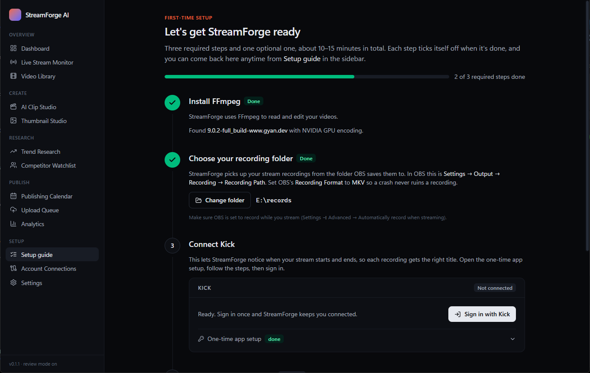

StreamForge AI
A Windows desktop app for streamers. Stream on Kick, and StreamForge turns each broadcast into content: YouTube uploads, vertical clips with subtitles, thumbnails and posts for TikTok, Instagram and Facebook. Everything waits for your review before it's posted.
Download for Windows Setup guide

How it uses your accounts
- StreamForge runs on your own PC. You sign in to each platform yourself, through that platform's official login page.
- It only posts content you made and approved, to the accounts you connected.
- Your logins are stored in Windows Credential Manager on your PC and are never sent to us. See the Privacy Policy.
Questions: open an issue on GitHub.